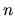

The FE accepts the following general-purpose messages:
#1 message
A fatal error, described in the message, has been detected by the SM.
#1
This tells the FE that the SM has completed its shutdown, so the FE may now exit.
#1 viewID
This tells the FE that the SM has started the problem with viewID.
#1 viewID
This tells the FE that the SM has suspended the problem with viewID. The FE may get this message even when the end user has not suspended the problem, e.g., when all of the ARCs for the problem have been used up.
#1 viewID
This tells the FE that the SM has resumed the problem with viewID.
#1 viewID
This tells the FE to put the problem in a state similar to suspended, except that it cannot be resumed. This message is sent when the problem has finished its work.
#1 {objectID+}
This tells the FE that the SM has deleted the objects with the given objectIDs. In this case objectID is not a keyword argument.
#1 viewID ARCSlotID value
This tells the FE that the ARC value of ARCSlotID in viewID has changed to value. These messages are correctly interpreted whether the view is open or not, and are quietly ignored when there is no view at all with viewID (as happens, e.g., when a purely internal active object sends an ARC update).
#1 name errMesg
This tells the FE that a previous attempt to check in an object with name name failed due to a syntax error in the definition of the object. The error message is in errMesg. The FE is responsible for reposting the same kind of dialog, with the same entries as when the dialog was last confirmed, along with the error message. If the new dialog is confirmed, with any or all entries possibly different, the FE must use the same message template as in the previous check in request.
The errMesg has the form { {descr}}, where is the index of the problem, and descr says what is wrong.
#1 viewID text level
This tells the FE to append the Hot text at the end of the log of viewID. When level has value , the text is posted to both the view log and the session log; when level is , only the former.
#1 name prefix typeID
This is an experimental message, sent at startup, via which the SM associates human readable text, the name, with a typeID. The prefix is the preferred default name prefix for an object of the given type. Currently, the arguments are not keyword arguments.